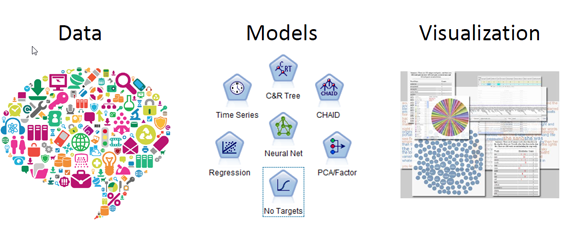

Data science, a visualization and communications expert
- Take statistical and computational analysis and turn it into graphs, charts, and animations
- Create visualizations that clearly show insights from data and corresponding analystics
- Generate static and dynamic visualizations in a variety of visual media
- Data-driven insights into decisions and action
Learn more here.